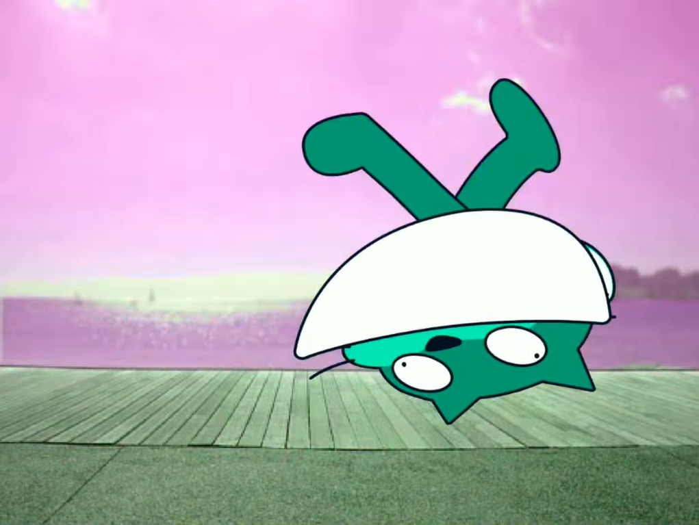
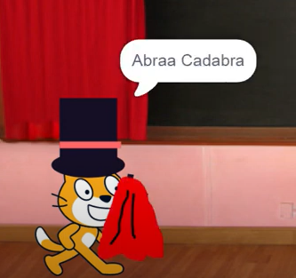

Scratch Cat
Scratch Cat, an orange color cat with white patches, who speaks in meow sound but still able to speak English. Scratch Cat is very smart and can do chores. He likes to solve maths and puzzles. However, due to some misunderstanding, Scratch Cat drank or ate something suspicious that causes health damage, however he is a cartoon, he can revive afterwards.However, Scratch Cat has appeared many times in some videos, like Wrong Potion and Magic Show. In the wrong potion, where he drinks an abnormal potion without knowing about it and went crazy and died. In the magic show, he became a magician doing magic, but everything goes wrong.Scratch Cat is mascot of Scratch before Gobo. He was since the beginning of Scratch 1.0. He has appeared as a mysterious and cartoonish that loves to do weird and unlogical things.



Scratch Cat went crazy Scratch Cat showing magic tricksTimes when Scratch Cat appeared in my videos
Scratch Cat drinks a wro...
Pico drinks the wrong poti...
Umm... Gobo?
Scratch Cat magic show...
Once upon a time...
Mr. Cursor
Nano dumb jokes
YouTube Tutorials be like
Scratch Minecraft Survival...
Unable to retrieve data of the video
Unable to retrieve data of the video
Scratch Cat and his talki...
What if MouseHeadz drank...
Scratch Cat 3.0 vs Scratch...
<
>